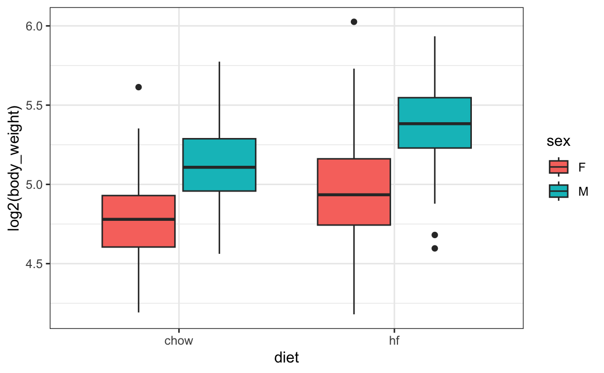
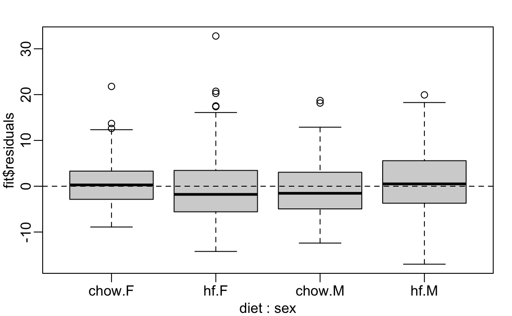

17 Treatment effect models
Up to now, all our linear models have been applied to two or more continuous random variables. We assume the random variables are multivariate normal and use this to motivate a linear model. This approach covers many real-life examples of linear regression. However, linear models have many other applications. One of the most popular is to quantify treatment effects in randomized and controlled experiments. One of the first applications was in agriculture, where different plots of lands were treated with different combinations of fertilizers to try to determine if they were effective. In fact, the use of \(Y\) for the outcome in statistics is due to the mathematical theory being developed for crop yield as the outcome.
Since then, the same ideas have been applied in other areas, such as randomized trials developed to determine if drugs cure or prevent diseases or if policies have an effect on social or educational outcomes. In the latter example, we think of the policy intervention as a treatment and follow the same mathematical procedure. The analyses used in A/B testing, widely used today by internet companies, are based on treatment effects models.
Moreover, these models have been applied in observational studies where analysts attempt to use linear models to estimate effects of interest while accounting for potential confounders. For example, to estimate the effect of a diet high in fruits and vegetables on blood pressure, we would have to adjust for factors such as age, sex, and smoking status.
In this chapter, we consider an experiment designed to test for the effects of a high-fat diet on mouse physiology. Mice were randomly selected and divided into two groups: one group receiving a high-fat diet, considered the treatment, while the other group served as the control and received the usual chow diet. The data is included in the dslabs package:
A boxplot shows that the high fat diet mice are, on average, heavier.
However, given that we divided the mice randomly, is it possible that the observed difference is simply due to chance? Here, we can compute the sample average and standard deviation of each group and perform statistical inference on the difference of these means, similar to our approach for election forecasting in Chapter 9 and Chapter 11.
17.1 Comparing group means
The sample averages for the two groups, high-fat and chow diets, are different:
However, this is a random sample of mice, and the assignment to the diet group is also done randomly. So is this difference due to chance? We will use hypothesis testing, first described in Chapter 9, to answer this question.
Let \(\mu_1\) and \(\sigma_1\) represent the weight average and standard deviation, respectively, that we would observe if the entire population of mice were on the high-fat diet. Define \(\mu_0\) and \(\sigma_0\) similarly, but for the chow diet. Define \(N_1\) and \(N_0\) as the sample sizes, and \(\bar{X}_1\) and \(\bar{X}_0\) the sample averages, for the for the high-fat and chow diets, respectively.
Since the data comes from a random sample, the central limit theorem tells us that, if the sample is large enough, the difference in averages \(bar{X}_1 - \bar{X}_0\) follows a normal distribution, with expected value \(\mu_1-\mu_0\) and standard error \(\sqrt{\frac{\sigma_1^2}{N_1} + \frac{\sigma_0^2}{N_0}}\).
If we define the null hypothesis as the high-fat diet having no effect, or \(\mu_1 - \mu_0 = 0\), this implies that
\[ \frac{\bar{X}_1 - \bar{X}_0}{\sqrt{\frac{\sigma_1^2}{N_1} + \frac{\sigma_0^2}{N_0}}} \]
has expected value 0 and standard error 1 and therefore approximately follows a standard normal distribution.
Note that we can’t compute this quantity in practice because the \(\sigma_1\) and \(\sigma_0\) are unknown. However, if we estimate them with the sample standard deviations, denote them \(s_1\) and \(s_0\) for the high-fat and chow diets, respectively, the central limit still holds and tells us that
\[ t = \frac{\bar{X}_1 - \bar{X}_0}{\sqrt{\frac{s_1^2}{N_1} + \frac{s_0^2}{N_0}}} \]
follows a standard normal distribution when the null hypothesis is true. This implies that we can easily compute the probability of observing a value as large as the one we obtained:
Here \(t\) is well over 3, so we don’t really need to compute the p-value 1-pnorm(t_stat) as we know it will be very small.
Note that when \(N\) is not large enough, then the CLT does not apply. However, if the outcome data, in this case weight, follows a normal distribution, then \(t\) follows a t-distribution with \(N_1+N_2-2\) degrees of freedom. So the calculation of the p-value is the same except that we use pt instead of pnorm. Specifically, we use 1-pt(t_stat, with(stats, n[2]+n[1]-2).
Differences in means are commonly examined in the scientific studies. As a result this t-statistic is one of the most widely reported summaries. When used to determine if an observed difference is statistically significant, we refer to the procedure as “performing a t test”.
In the computation above, we computed the probability of t being as large as what we observed. However, when our interest spans both directions, for example, either an increase or decrease in weight, we need to compute the probability of t being as extreme as what we observe. The formula simply changes to using the absolute value: 1 - pnorm(abs(t-test)) or 1-pt(abs(t_stat), with(stats, n[2]+n[1]-2).
17.2 One factor design
Although the t-test is useful for cases in which we compare two treatments, it is common to have other variables affect our outcomes. Linear models permit hypothesis testing in these more general situations. We start the description of the use of linear models for estimating treatment effects by demonstrating how they can be used to perform t-tests.
If we assume that the weight distributions for both chow and high-fat diets are normally distributed, we can write the following linear model to represent the data:
\[ Y_i = \beta_0 + \beta_1 x_i + \varepsilon_i \]
with \(X_i\) 1, if the \(i\)-th mice was fed the high-fat diet, and 0 otherwise, and the errors \(\varepsilon_i\) independent and normally distributed with expected value 0 and standard deviation \(\sigma\). Note that this mathematical formula looks exactly like the model we wrote out for the father-son heights. However, the fact that \(x_i\) is now 0 or 1 rather than a continuous variable, allows us to use it in this different context. In particular, notice that now \(\beta_0\) represents the population average height of the mice on the chow diet and \(\beta_0 + \beta_1\) represents the population average for the weight of the mice on the high-fat diet.
A nice feature of this model is that \(\beta_1\) represents the treatment effect of receiving the high-fat diet. The null hypothesis that the high-fat diet has no effect can be quantified as \(\beta_1 = 0\). To perform hypothesis testing on the effect of the high fat diet we can estimate \(\beta_1\) and compute the probability of an estimates being as large as the observed when the null hypothesis is true. So how do we estimate \(\beta_1\) and compute this probability?
A powerful characteristic of linear models is that we can estimate the \(\beta\)s and their standard errors with the same LSE machinery:
fit <- lm(body_weight ~ diet, data = mice_weights)Because diet is a factor with two entries, the lm function knows to fit the linear model above with a \(x_i\) a indicator variable. The summary function shows us the resulting estimate, standard error, and p-value:
coefficients(summary(fit))
#> Estimate Std. Error t value Pr(>|t|)
#> (Intercept) 31.54 0.386 81.74 0.00e+00
#> diethf 5.14 0.548 9.36 8.02e-20Using broom, we can write:
The statistic computed here is the estimate divided by its standard error: \(\hat{\beta}_1 / \hat{\mbox{SE}}(\hat{\beta}_1)\). In the case of the simple one-factor model, we can show that this statistic is almost equivalent to the t-statistics computed in the previous section:
c(coefficients(summary(fit))[2,3], t_stat)
#> [1] 9.36 9.34Intuitively, it makes sense, as both \(\hat{\beta_1}\) and the numerator of the t-test are estimates of the treatment effect.
The one minor difference is that the linear model does not assume a different standard deviation for each population. Instead, both populations share \(\mbox{SD}(\varepsilon)\) as a standard deviation. Note that, although we don’t demonstrate it with R here, we can redefine the linear model to have different standard errors for each group.
In the linear model description provided here, we assumed \(\varepsilon\) follows a normal distribution. This assumption permits us to show that the statistics formed by dividing estimates by their estimated standard errors follow t-distribution, which in turn allows us to estimate p-values or confidence intervals. However, note that we do not need this assumption to compute the expected value and standard error of the least squared estimates. Furthermore, if the number of observations is large enough, then the central limit theorem applies and we can obtain p-values and confidence intervals even without the normal distribution assumption for the errors.
17.3 Two factor designs
Note that this experiment included male and female mice, and male mice are known to be heavier. This explains why the residuals depend on the sex variable:
boxplot(fit$residuals ~ mice_weights$sex)
This misspecification can have real implications; for instance, if more male mice received the high-fat diet, then this could explain the increase. Conversely, if fewer received it, we might underestimate the diet effect. Sex could be a confounder, indicating that our model can certainly be improved.
From examining the data:
mice_weights |> ggplot(aes(diet, log2(body_weight), fill = sex)) + geom_boxplot()
we see that the diet effect is observed for both sexes and that males are heavier than females. Although not nearly as obvious, it also appears the diet effect is stronger in males.
A linear model that permits a different expected value for the following four groups, 1) female on chow diet, 2) females on high-fat diet, 3) male on chow diet, and 4) males on high-fat diet, can be written like this:
\[ Y_i = \beta_1 x_{i,1} + \beta_2 x_{i,2} + \beta_3 x_{i,3} + \beta_4 x_{i,4} + \varepsilon_i \]
with \(x_{i,1},\dots,x_{i,4}\) indicator variables for each of the four groups. Note that with this representation we allow the diet effect to be different for males and females.
However, with this representation, none of the \(\beta\)s represent the effect of interest: the diet effect. A powerful feature of linear models is that we can rewrite the model so that the expected value for each group remains the same, but the parameters represent the effects we are interested in. So, for example, in the representation
\[ Y_i = \beta_0 + \beta_1 x_{i,1} + \beta_2 x_{i,2} + \beta_3 x_{i,1} x_{i,2} + \varepsilon_i \]
with \(x_{i,1}\) an indicator that is 1 if individual \(i\) is on the high-fat diet \(x_{i,2}\) an indicator that is 1 if you are male, the \(\beta_1\) is interpreted as the diet effect for females, \(\beta_2\) as the average difference between males and females, and \(\beta_3\) the difference in the diet effect between males and females. In statistics, \(\beta_3\) is referred to as an interaction effect. The \(\beta_0\) is considered the baseline value, which is the average weight of females on the chow diet.
Statistical textbooks describe several other ways in which the model can be rewritten to obtain other types of interpretations. For example, we might want \(\beta_2\) to represent the overall diet effect (the average between female and male effect) rather than the diet effect on females. This is achieved by defining what contrasts we are interested in.
In R, we can specific the linear model above using the following:
fit <- lm(body_weight ~ diet*sex, data = mice_weights)The * implies that the term that multiplies \(x_{i,1}\) and \(x_{i,2}\) should be included, along with the \(x_{i,1}\) and \(x_{i,2}\) terms.
tidy(fit, conf.int = TRUE) |> filter(!str_detect(term, "Intercept"))
#> # A tibble: 3 × 7
#> term estimate std.error statistic p.value conf.low conf.high
#> <chr> <dbl> <dbl> <dbl> <dbl> <dbl> <dbl>
#> 1 diethf 3.88 0.624 6.22 8.02e-10 2.66 5.10
#> 2 sexM 7.53 0.627 12.0 1.27e-30 6.30 8.76
#> 3 diethf:sexM 2.66 0.891 2.99 2.91e- 3 0.912 4.41Note that the male effect is larger that the diet effect, and the diet effect is statistically significant for both sexes, with diet affecting males more by between 1 and 4.5 grams.
A common approach applied when more than one factor is thought to affect the measurement is to simply include an additive effect for each factor, like this:
\[ Y_i = \beta_0 + \beta_1 x_{i,1} + \beta_2 x_{i,2} + \varepsilon_i \]
In this model, the \(\beta_1\) is a general diet effect that applies regardless of sex. In R, we use the following code, employing a + instead of *:
fit <- lm(body_weight ~ diet + sex, data = mice_weights)Note that this model does not account for the difference in diet effect between males and females. Diagnostic plots would reveal this deficiency by showing that the residuals are biased: they are, on average, negative for females on the diet and positive for males on the diet, rather than being centered around 0.
plot(fit, which = 1)
Scientific studies, particularly within epidemiology and social sciences, frequently omit interaction terms from models due to the high number of variables. Adding interactions necessitates numerous parameters, which in extreme cases may prevent the model from fitting. However, this approach assumes that the interaction terms are zero, and if incorrect, it can skew the interpretation of the results. Conversely, when this assumption is valid, models excluding interactions are simpler to interpret, as parameters are typically viewed as the extent to which the outcome increases with the assigned treatment.
Linear models are highly flexible and applicable in many contexts. For example, we can include many more factors than just 2. We have only just scratched the surface of how linear models can be used to estimate treatment effects. We highly recommend learning more about this by exploring linear model textbooks and R manuals that cover the use of functions such as lm, contrasts, and model.matrix.
17.4 Contrasts
In the examples we have examined, each treatment had only two groups: diet had chow/high-fat, and sex had female/male. However, variables of interest often have more than one level. For example, we might have tested a third diet on the mice. In statistics textbooks, these variables are referred to as a factor, and the groups in each factor are called its levels.
When a factor is included in the formula, the default behavior for lm is to define the intercept term as the expected value for the first level, and the other coefficient are to represent the difference, or contrast, between the other levels and first. We can see when we estimate the sex effect with lm like this:
fit <- lm(body_weight ~ sex, data = mice_weights)
coefficients(fit)
#> (Intercept) sexM
#> 29.76 8.82To recover the expected mean for males, we can simply add the two coefficients:
sum(fit$coefficients[1:2])
#> [1] 38.6The package emmeans simplifies the calculation and also calculates standard errors:
Now, what if we really didn’t want to define a reference level? What if we wanted a parameter to represent the difference from each group to the overall mean? Can we write a model like this:
\[ Y_i = \beta_0 + \beta_1 x_{i,1} + \beta_2 x_{i,2} + \varepsilon_i \] with \(x_{i,1} = 1\), if observation \(i\) is female and 0 otherwise, and \(x_{i,2}=1\), if observation \(i\) is male and 0 otherwise?
Unfortunately, this representation has a problem. Note that the mean for females and males are represented by \(\beta_0 + \beta_1\) and \(\beta_0 + \beta_2\), respectively. This is a problem because the expected value for each group is just one number, say \(\mu_f\) and \(\mu_m\), and there is an infinite number of ways \(\beta_0 + \beta_1 = \mu_f\) and \(\beta_0 +\beta_2 = \mu_m\) (three unknowns with two equations). This implies that we can’t obtain a unique least squares estimates. In statistics, we say the model, or parameters, are unidentifiable. The default behavior in R solves this problem by requiring \(\beta_1 = 0\), forcing \(\beta_0 = \mu_m\), which permits us to solve the system of equations.
Keep in mind that this is not the only constraint that permits estimation of the parameters. Any linear constraint will do as it adds a third equation to our system. A widely used constraint is to require \(\beta_1 + \beta_2 = 0\). To achieve this in R, we can use the argument contrast in the following way:
fit <- lm(body_weight ~ sex, data = mice_weights,
contrasts = list(sex = contr.sum))
coefficients(fit)
#> (Intercept) sex1
#> 34.17 -4.41We see that the intercept is now larger, reflecting the overall mean rather than just the mean for females. The other coefficient, \(\beta_1\), represents the contrast between females and the overall mean in our model. The coefficient for men is not shown because it is redundant: \(\beta_1= -\beta_2\).
If we want to see all the estimates, the emmeans package also makes the calculations for us:
The use of this alternative constraint is more practical when a factor has more than one level, and choosing a baseline becomes less convenient. Furthermore, we might be more interested in the variance of the coefficients rather than the contrasts between groups and the reference level.
As an example, consider that the mice in our dataset are actually from several generations:
table(mice_weights$gen)
#>
#> 4 7 8 9 11
#> 97 195 193 97 198To estimate the variability due to the different generations, a convenient model is:
\[ Y_i = \beta_0 + \sum_{j=1}^J \beta_j x_{i,j} + \varepsilon_i \]
with \(x_{i,j}\) indicator variables: \(x_{i,j}=1\) if mouse \(i\) is in level \(j\) and 0 otherwise, \(J\) representing the number of levels, in our example 5 generations, and the level effects constrained with
\[ \frac{1}{J} \sum_{j=1}^J \beta_j = 0 \implies \sum_{j=1}^J \beta_j = 0. \]
This constraint makes the model identifiable and also allows us to quantify the variability due to generations with:
\[ \sigma^2_{\text{gen}} \equiv \frac{1}{J}\sum_{j=1}^J \beta_j^2 \]
We can see the estimated coefficients using the following:
fit <- lm(body_weight ~ gen, data = mice_weights,
contrasts = list(gen = contr.sum))
contrast(emmeans(fit, ~gen))
#> contrast estimate SE df t.ratio p.value
#> gen4 effect -0.122 0.705 775 -0.174 0.8620
#> gen7 effect -0.812 0.542 775 -1.497 0.3370
#> gen8 effect -0.113 0.544 775 -0.207 0.8620
#> gen9 effect 0.149 0.705 775 0.212 0.8620
#> gen11 effect 0.897 0.540 775 1.663 0.3370
#>
#> P value adjustment: fdr method for 5 testsIn the next section, we briefly describe a technique useful to study the variability associated with this factor.
17.5 Analysis of variance (ANOVA)
When a factor has more than one level, it is common to want to determine if there is significant variability across the levels rather than specific difference between any given pair of levels. Analysis of variances (ANOVA) provides tools to do this.
ANOVA provides an estimate of \(\sigma^2_{\text{gen}}\) and a statistical test for the null hypothesis that the factor contributes no variability: \(\sigma^2_{\text{gen}} =0\).
Once a linear model is fit using one or more factors, the aov function can be used to perform ANOVA. Specifically, the estimate of the factor variability is computed along with a statistic that can be used for hypothesis testing:
Keep in mind that if given a model formula, aov will fit the model:
We do not need to specify the constraint because ANOVA needs to constrain the sum to be 0 for the results to be interpretable.
This analysis indicates that generation is not statistically significant.
We do not include many details, for example, on how the summary statistics and p-values shown by aov are defined and motivated. There are several books dedicated to the analysis of variance, and textbooks on linear models often include chapters on this topic. Those interested in learning more about these topics can consult one of these textbooks.
17.5.1 Multiple factors
ANOVA was developed to analyze agricultural data, which typically included several factors such as fertilizers, blocks of lands, and plant breeds.
Note that we can perform ANOVA with multiple factors:
summary(aov(body_weight ~ sex + diet + gen, data = mice_weights))
#> Df Sum Sq Mean Sq F value Pr(>F)
#> sex 1 15165 15165 389.80 <2e-16 ***
#> diet 1 5238 5238 134.64 <2e-16 ***
#> gen 4 295 74 1.89 0.11
#> Residuals 773 30074 39
#> ---
#> Signif. codes: 0 '***' 0.001 '**' 0.01 '*' 0.05 '.' 0.1 ' ' 1This analysis suggests that sex is the biggest source of variability, which is consistent with previously made exploratory plots.
One of the key aspects of ANOVA (Analysis of Variance) is its ability to decompose the total variance in the data, represented by \(\sum_{i=1}^n Y_i^2\), into individual contributions attributable to each factor in the study. However, for the mathematical underpinnings of ANOVA to be valid, the experimental design must be balanced. This means that for every level of any given factor, there must be an equal representation of the levels of all other factors. In our study involving mice, the design is unbalanced, requiring a cautious approach in the interpretation of the ANOVA results.
17.5.2 Array representation
When the model includes more than one factor, writing down linear models can become cumbersome. For example, in our two factor model, we would have to include indicator variables for both factors:
\[ Y_i = \beta_0 + \sum_{j=1}^J \beta_j x_{i,j} + \sum_{k=1}^K \beta_{J+k} x_{i,J+k} + \varepsilon_i \mbox{ with }\sum_{j=1}^J \beta_j=0 \mbox{ and } \sum_{k=1}^K \beta_{J+k} = 0, \]
the \(x_{i,1},\dots,x_{i,J}\) indicator functions for the \(J\) levels in the first factor and \(x_{i,J+1},\dots,x_{i,J+K}\) indicator functions for the \(K\) levels in the second factor.
An alternative approach widely used in ANOVA to avoid indicators variables, is to save the data in an array, using different Greek letters to denote factors and indices to denote levels:
\[ Y_{i,j,k} = \mu + \alpha_j + \beta_k + \varepsilon_{i,j,k} \]
with \(\mu\) the overall mean, \(\alpha_j\) the effect of level \(j\) in the first factor, and \(\beta_k\) the effect of level \(k\) in the second factor. The constraint can now be written as:
\[ \sum_{j=1}^J \alpha_j = 0 \text{ and } \sum_{k=1}^K \beta_k = 0 \]
This notation lends itself to estimating the effects by computing means across dimensions of the array.
17.6 Exercises
1. Once you fit a model, the estimate of the standard error \(\sigma\) can be obtained as follows:
Compute the estimate of \(\sigma\) using both the model that includes only diet and a model that accounts for sex. Are the estimates the same? If not, why not?
2. One of the assumption of the linear model fit by lm is that the standard deviation of the errors \(\varepsilon_i\) is equal for all \(i\). This implies that it does not depend on the expected value. Group the mice by their weight like this:
Compute the average and standard deviation for groups with more than 10 observations and use data exploration to verify if this assumption holds.
3. The dataset also includes a variable indicating which litter the mice came from. Create a boxplot showing weights by litter. Use faceting to make separate plots for each diet and sex combination.
4. Use a linear model to test for a litter effect, taking into account sex and diet. Use ANOVA to compare the variability explained by litter with that of other factors.
5. The mouse_weights data includes two other outcomes: bone density and percent fat. Create a boxplot illustrating bone density by sex and diet. Compare what the visualizations reveal about the diet effect by sex.
- Fit a linear model and conduct a separate test for the diet effect on bone density for each sex. Note that the diet effect is statistically significant for females but not for males. Then fit the model to the entire dataset that includes diet, sex and their interaction. Notice that the diet effect is significant, yet the interaction effect is not. Explain how this can happen. Hint: To fit a model to the entire dataset with a separate effect for males and females, you can use the formula
~ sex + diet:sex
7. In Chapter 11, we talked about pollster bias and used visualization to motivate the presence of such bias. Here we will give it a more rigorous treatment. We will consider two pollsters that conducted daily polls. We will look at national polls for the month before the election:
We want to answer the question: is there a pollster bias? Make a plot showing the spreads for each pollster.
8. The data does seem to suggest there is a difference. However, these data are subject to variability. Perhaps the differences we observe are due to chance.
The urn model theory says nothing about pollster effect. Under the urn model, both pollsters have the same expected value: the election day difference, that we call \(\mu\).
To answer the question “is there an urn model?” we will model the observed data \(Y_{i,j}\) in the following way:
\[ Y_{i,j} = \mu + b_i + \varepsilon_{i,j} \]
with \(i=1,2\) indexing the two pollsters, \(b_i\) the bias for pollster \(i\), and \(\varepsilon_ij\) poll to poll chance variability. We assume the \(\varepsilon\) are independent from each other, have expected value \(0\), and standard deviation \(\sigma_i\) regardless of \(j\).
Which of the following best represents our question?
- Is \(\varepsilon_{i,j}\) = 0?
- How close are the \(Y_{i,j}\) to \(\mu\)?
- Is \(b_1 \neq b_2\)?
- Are \(b_1 = 0\) and \(b_2 = 0\) ?
9. On the right side of this model, only \(\varepsilon_{i,j}\) is a random variable; the other two are constants. What is the expected value of \(Y_{1,j}\)?
10. Suppose we define \(\bar{Y}_1\) as the average of poll results from the first poll, \(Y_{1,1},\dots,Y_{1,N_1}\), where \(N_1\) is the number of polls conducted by the first pollster:
What is the expected values \(\bar{Y}_1\)?
11. What is the standard error of \(\bar{Y}_1\) ?
12. Suppose we define \(\bar{Y}_2\) as the average of poll results from the first poll, \(Y_{2,1},\dots,Y_{2,N_2}\), where \(N_2\) is the number of polls conducted by the first pollster. What is the expected value \(\bar{Y}_2\)?
13. What is the standard error of \(\bar{Y}_2\) ?
14. Using what we learned by answering the questions above, what is the expected value of \(\bar{Y}_{2} - \bar{Y}_1\)?
15. Using what we learned by answering the questions above, what is the standard error of \(\bar{Y}_{2} - \bar{Y}_1\)?
16. The answer to the question above depends on \(\sigma_1\) and \(\sigma_2\), which we don’t know. We learned that we can estimate these with the sample standard deviation. Write code that computes these two estimates.
17. What does the CLT tell us about the distribution of \(\bar{Y}_2 - \bar{Y}_1\)?
- Nothing because this is not the average of a sample.
- Because the \(Y_{ij}\) are approximately normal, so are the averages.
- Note that \(\bar{Y}_2\) and \(\bar{Y}_1\) are sample averages, so if we assume \(N_2\) and \(N_1\) are large enough, each is approximately normal. The difference of normally distributed variables is also normally distributed.
- The data are not 0 or 1, so CLT does not apply.
18. We have constructed a random variable that has an expected value of \(b_2 - b_1\), representing the difference in pollster bias. If our model holds, then this random variable has an approximately normal distribution, and we know its standard error. The standard error depends on \(\sigma_1\) and \(\sigma_2\), but we can plug the sample standard deviations we computed above. We began by asking: is \(b_2 - b_1\) different from 0? Using all the information we have gathered above, construct a 95% confidence interval for the difference \(b_2 - b_1\).
19. The confidence interval tells us there is relatively strong pollster effect resulting in a difference of about 5%. Random variability does not seem to explain it. We can compute a p-value to relay the fact that chance does not explain it. What is the p-value?
20. The statistic formed by dividing our estimate of \(b_2-b_1\) by its estimated standard error:
\[ \frac{\bar{Y}_2 - \bar{Y}_1}{\sqrt{s_2^2/N_2 + s_1^2/N_1}} \]
is the t-statistic. Now notice that we have more than two pollsters. We can also test for pollster effect using all pollsters, not just two. The idea is to compare the variability across polls to variability within polls.
For this exercise, create a new table:
Compute the average and standard deviation for each pollster and examine the variability across the averages. Compare this to the variability within the pollsters, summarized by the standard deviation.